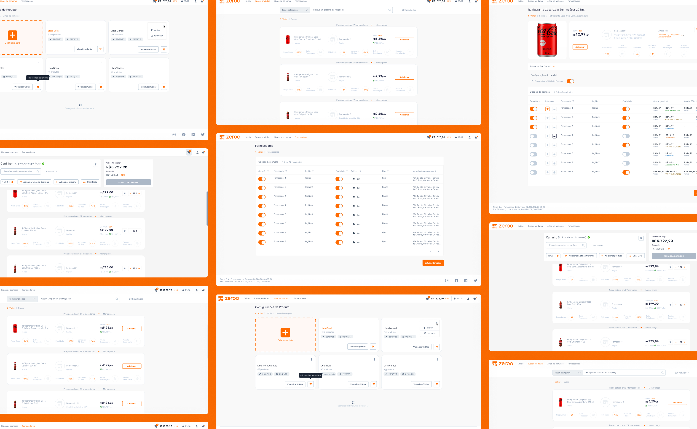
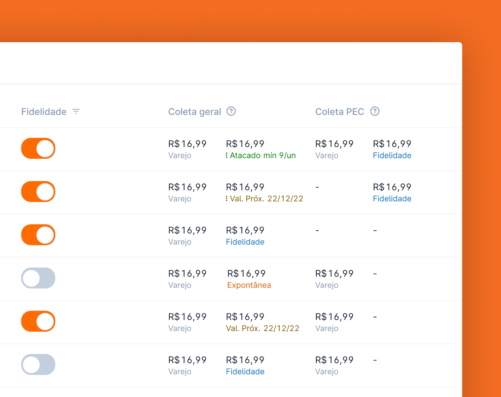
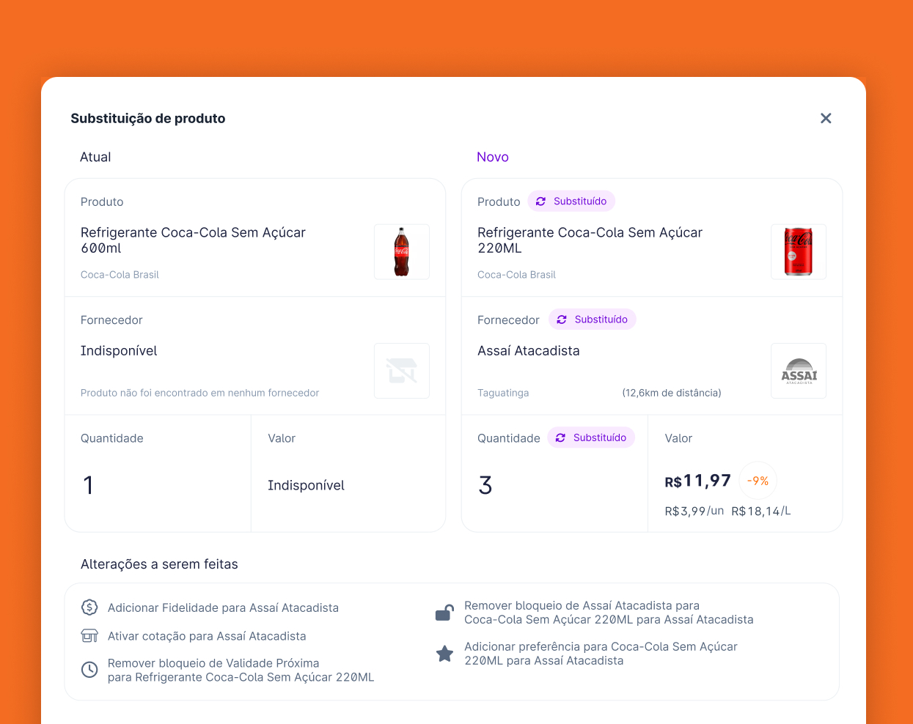

UX/UI
Design System
UX/UI
Design System
Quatro produtos, um único designer
( 1 ) Visão geral
Criando um sistema
do zero…o
Esse case study conta minha experiência de mais de 2 anos no founding team de uma startup.
Um verdadeiro aprendizado o qual me deparei com o desafio de ser um time uma pessoa só, os erros e os acertos desenvolvidos no decorrer do projeto, criação de regras e normas, aplicação de teorias de
UX a fim de desenvolver um sistema coeso com quatro produtos finais e de quebra uma identidade visual.

( 2 ) Papel
Território desconhecido
Depois de ter tido minha primeira experiência no setor público em uma empresa já consolidada. Recebi uma proposta para fazer parte do founding team de uma ideia. Tomei esse desafio como uma oportunidade de não só aprimorar minhas habilidades, mas colocar à prova tudo que eu aprendi em um ambiente de entregas rápidas com um time pequeno.
Resultados
- Experiência em varejo / Fintec: aprimoramento no setor de marketplace principalmente na área de cotação de preços, promoções e economia.
- Aprimoramento de visualização de dados: criação de interfaces competentes com uma grande quantidade de informações visuais cruciais para o usuário.
- Estudo em UX Research: aprimoramento das minhas habilidades de pesquisa na área e estudos com usuário a fim de aperfeiçoar telas, fluxos e decisões.
- Quatro produtos em um: aprimoramento do sistema de gerenciamento da dados (back office), criação de dois aplicativos para o envio de dados e visualização de informações para sistema do cliente final (front office) e, por fim, desenvolvimento do sistema principal.
- Designer com uma pitada de desenvolvedor: aprendi bastante com os meus companheiros de projeto. Através de uma perspectiva ágil, estivemos juntos na elaboração de features novas para o sistema, testes de usabilidade e uso de frameworks para otimização de tempo. Assim como aprimorei minhas habilidades em linguagens de programação básicas como HTML, CSS e JS.
- Amadurecimento em gestão de projeto: organizar todas as etapas desde da prototipação inicial em wireframes até os protótipos finais. Definindo demandas e gestão de tempo seguindo o esqueleto das metodologias ágeis.

Tabela com alturas respeitadas para uma melhor leitura.

Informações precisas para tomada de decisões importantes.